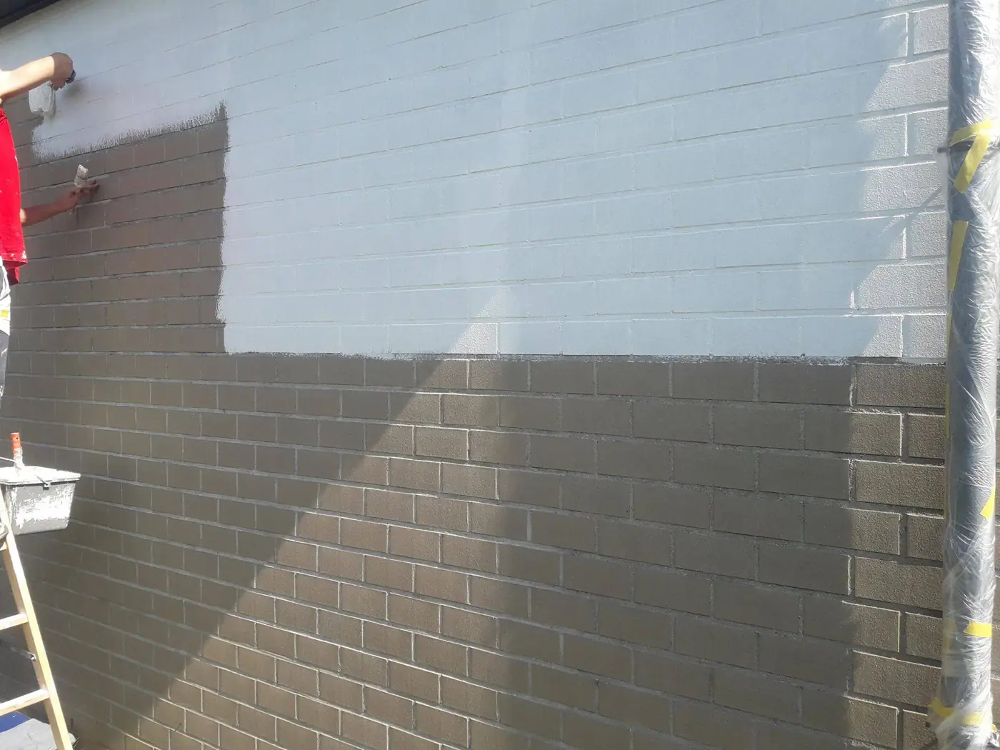
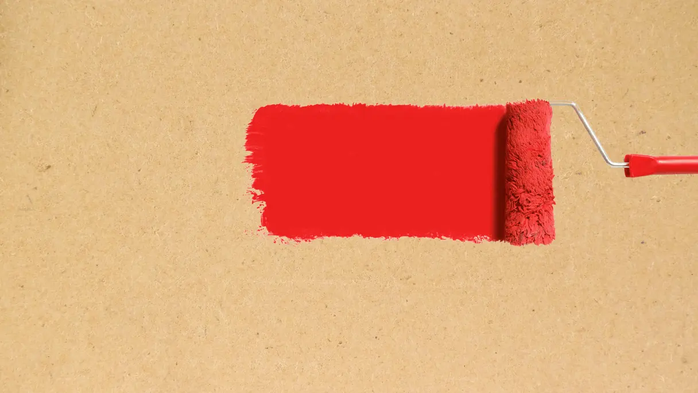

Schilder je gevel en geef je huis een nieuwe look
Thuiskomen en genieten van je karaktervolle interieur is fantastisch. Dat gevoel ook buitenshuis creëren is mooi meegenomen. Je portier toegooien na een lange werkdag en je mooie gevel bewonderen, dat is pas thuiskomen. Het hoeven immers niet altijd bakstenen, beton of saaie pleister te zijn. Een geverfde gevel kan je woning echt een frisse uitstraling geven. Maar buitenmuren zijn geen binnenmuren en ook niet alle buitenmuren zijn uit hetzelfde hout gesneden. Alvorens je de verfborstels uit de kast haalt, doe je er goed aan je even te informeren. SDAD maakt je alvast wegwijs in de blog.


Wanneer je buitenmuren schilderen?
Om een piekfijn resultaat te bekomen, moet je met allerlei zaken rekening houden. Welke ondergrond wil je verven, hoe is het met de staat van de ondergrond gesteld, welke verf is het meest geschikt, ...?
Vooraleer je op deze vragen een antwoord formuleert, buig je eerst over het weerbericht. Een buitenmuur schilderen bij ongunstige weersomstandigheden is immers onbegonnen werk. Houd rekening met de volgende tips en verf niet bij...
- regenweer of mist, want de luchtvochtigheid is dan te hoog;
- sterke wind, de verf droogt dan te snel en er waait vuiligheid op:
- koude temperaturen (<10°C), waardoor de verf niet of te traag droogt;
- warme temperaturen (>20°C) of in de felle middagzon, wanneer de verf te snel droogt.
De ideale weersomstandigheden? Windstilte en droge dagen met temperaturen tussen 10 en 20°C.
Je buitenmuur verfklaar maken
Een vuile ondergrond vol met scheuren en barsten schilderen? Dan ben je eraan voor de moeite. Maak komaf met je vuile buitenmuur en creëer een vast en egaal oppervlak. Borstel je onbeschilderde muur af met een harde borstel om stof te verwijderen. Heb je al een geschilderde muur? Maak deze dan eenvoudig schoon met water en een aangepast reinigingsmiddel. Verwijder tot slot ook mos en behandel je muur zodat je er later niet opnieuw mee te maken krijgt.
Ondanks dat je buitenmuren nu spik en spam zijn, kan je nog niet beginnen verven. Je muren moeten naast schoon, ook vast, egaal en droog zijn. Verwijder losse verflagen en herstel scheuren. Geef je muren voldoende tijd om te drogen na een regenbui, na vochtproblemen of na een reiniging. Ze moeten als het ware kurkdroog zijn!
Plak vervolgens je ramen en deuren af met tape en afdekfolie. Denk daarnaast ook aan de grond onder je voeten en bescherm je gazon, de stoep of het terras met dekens en folie. Ook je planten, regenpijpen en bekabeling doe je geen plezier met een spatje verf.
De juiste verf en het juiste gereedschap
Buitenmuren beschermen ons tegen weer en wind en krijgen dus heel wat te verduren. Een grondlaag aanleggen is in de meeste gevallen geen overbodige luxe. Enkel als je geschilderde muur in goede staat verkeert, kan je hem zonder primer schilderen. Haal de juiste verf in huis en gebruik het juiste gereedschap. Kiezen voor klassieke gevelverf kan wanneer je buitenmuur voldoende droog is. Aangepaste producten zijn echter wel nodig wanneer je met vochtproblemen of verpoederende ondergrond te maken hebt. Schaf vervolgens een ronde borstel aan voor de hoeken en kanten zodat deze moeilijk bereikbare plaatsen piece of cake worden. Gebruik voor de grote oppervlakken een verfrol met lange haren.
Schilderen maar...
Het juiste materiaal in huis en de primer aangebracht, dan kan het echte werk beginnen:
- Schilder de moeilijke bereikbare plaatsen eerste met je ronde borstel.
- Verdeel de verf gelijkmatig over de roller.
- Werk in vlakken van 1m²: start verticaal, rol horizontaal uit en eindig terug verticaal.
- Herhaal deze laatste twee stappen en voorzie een kleine overlap tussen de vlakken.
Een gevel schilderen is meer dan alleen een nieuwe kleur aanbrengen. Een grondige reiniging, de juiste voorbereiding van de ondergrond en een correct opgebouwd verfsysteem bepalen mee hoe lang het resultaat mooi blijft. Tijdens een vrijblijvend plaatsbezoek bekijken we graag welke oplossing het best aansluit bij uw woning en verwachtingen. Ontdek meer over onze buitenschilderwerken
Lees ook

MDF schilderen: hoe doe je dat?
MDF-platen zijn geschikt voor allerlei interieurprojecten. In 'no time' maak je bovendien komaf met de saaie kleur.…
Lees meer
Behangen, zo begin je eraan!
Goed behangen is geen koud kunstje. Je hebt kwalitatief materiaal nodig en moet best een handige harry zijn. We geven…
Lees meer
Je bakstenen muur schilderen? Het kan!
Een bakstenen binnen- of buitenmuur kan je eenvoudig schilderen, mits de juiste voorbereidingen en kwaliteitsvol…
Lees meerEen mooi resultaat begint met een goed gesprek.
Tijdens een vrijblijvend plaatsbezoek luisteren we naar uw wensen, geven we professioneel advies en bekijken we samen de mogelijkheden voor uw schilderwerken of interieurafwerking.